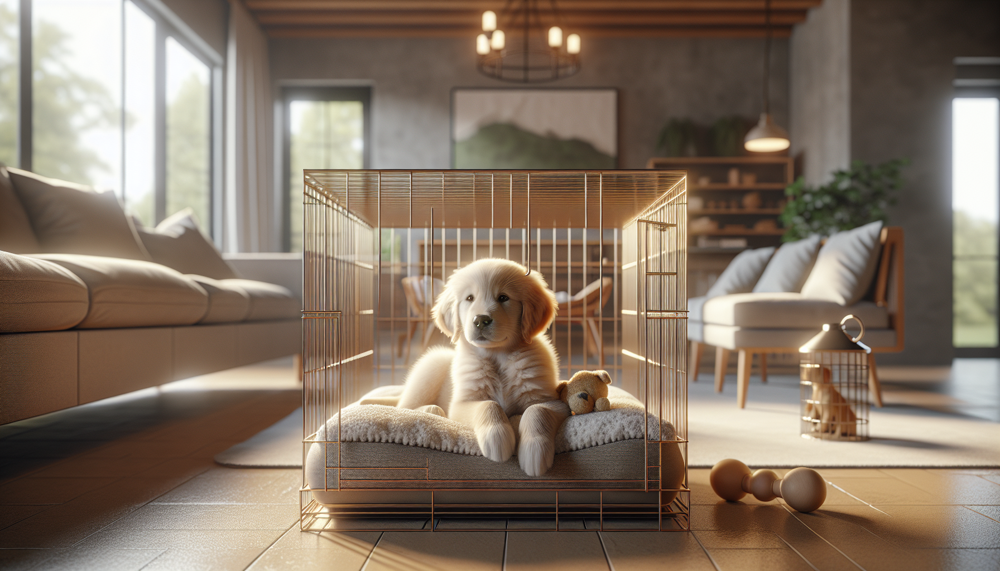

Crate training is one of the most useful skills you can teach a new puppy. Done correctly, a crate becomes a safe sleeping space, a helpful house-training tool, and a way to build calm independence. Done poorly, it can create stress, frustration, and confusion. The good news is that with the right approach, most puppies can learn to love their crate.
If you are a first-time dog owner, a new puppy parent, or you have recently adopted a rescue pup, this complete guide will walk you through the process step by step. We will cover what crate training is, why it works, how to choose the right crate, how to create positive associations, and what to do if your puppy cries or resists. Everything here is grounded in modern, science-backed, reward-based training principles.
At its best, crate training gives your puppy a predictable place to rest and feel secure. Dogs are denning animals in the sense that many enjoy small, enclosed spaces for sleep and downtime, though not every dog naturally loves a crate right away. That is why training matters.
A properly introduced crate can help with:
House training: Puppies are less likely to soil a sleeping area, which helps them learn bladder control and a potty routine.
Safety: A crate prevents chewing on dangerous objects, swallowing household items, or getting into trouble when unsupervised.
Better sleep: Many puppies settle more easily in a quiet, cozy crate.
Travel and vet care: Dogs who are comfortable in crates often handle car rides, boarding, grooming, and medical recovery with less stress.
Independence: Gradual crate training can reduce panic around alone time and teach your puppy how to relax without constant attention.
Crate training should never be used as punishment or as a place to isolate a puppy for long periods. The goal is emotional safety, not forced confinement.
The best crate is large enough for your puppy to stand up, turn around, and lie down comfortably, but not so large that one end becomes a bathroom and the other a bedroom. For growing puppies, many owners choose a wire crate with a divider panel so the space can expand as the dog grows.
Common crate options include:
Wire crates: Great visibility, airflow, and flexibility with divider panels.
Plastic airline-style crates: Cozy and enclosed, often helpful for puppies who settle better with fewer visual distractions.
Soft-sided crates: Better for already crate-trained dogs, not ideal for young puppies who chew or scratch.
To make the crate inviting, add:
A comfortable, washable bed or mat
A safe chew toy or food-stuffed enrichment toy
A light cover if your puppy relaxes better with reduced stimulation
Access to a quiet area of the home without total isolation
Avoid leaving collars on unsupervised puppies in crates, as they can catch on crate bars. Safety should always come first.
The most important rule of crate training is simple: go at your puppy's pace. You are not trying to force your puppy to "deal with it." You are teaching that the crate predicts comfort, food, rest, and good things.
Start with the door open and let your puppy explore freely. Toss a few treats inside. Feed meals near the crate, then just inside it, and eventually all the way in the back. Praise calmly when your puppy enters on their own.
Here is a simple introduction plan:
Place treats just outside and inside the crate.
Let your puppy walk in and out freely.
Feed meals in the crate with the door open.
Offer a stuffed food toy in the crate.
Briefly close the door for a few seconds while your puppy enjoys a treat, then open it before they become upset.
Gradually increase the time with the door closed.
Keep sessions short, easy, and successful. Multiple one- to three-minute sessions throughout the day are often more effective than one long session.
If your puppy hesitates, do not push or place them inside against their will unless absolutely necessary for safety. Instead, make the crate easier and more rewarding. Toss higher-value treats, sit nearby, or try feeding at the entrance first.
Every puppy is different, but a general first-week plan can help. Young puppies have limited bladder control and very short attention spans, so your expectations should be realistic.
Day 1-2: Focus on exploration and positive associations. Feed meals in the crate. Toss treats in. Encourage naps near or inside the crate with the door open.
Day 3-4: Begin very short closed-door sessions while your puppy chews a toy or eats a stuffed Kong. Stay nearby. Open the door before your puppy becomes distressed.
Day 5-6: Practice short rest periods in the crate after play, potty, and feeding. Move a little farther away for a minute or two, then return calmly.
Day 7 and beyond: Build duration gradually. Add one or two brief practice sessions daily when your puppy is sleepy and likely to succeed.
A helpful rhythm is: potty, play, training, potty again, then crate for a nap. Puppies settle best when their physical and mental needs have already been met.
At night, place the crate near your bed at first. This helps your puppy feel secure and allows you to hear when they need a potty break. Most young puppies cannot sleep through the night immediately, so plan for overnight bathroom trips.
Crate training is not a substitute for potty training, but it supports it extremely well. Puppies need frequent trips outside, especially after waking, eating, drinking, playing, and chewing.
Use the crate between potty opportunities, not instead of them. A puppy who is crated too long may have accidents, which slows training and can create anxiety around the crate.
General potty timing guidelines vary, but many young puppies need to go out every 1 to 2 hours during the day. Overnight, they may still need one or more bathroom breaks depending on age.
To make the most of crate training for house training:
Take your puppy out immediately after leaving the crate.
Reward pottying outside with praise and treats.
Keep a consistent feeding and potty schedule.
Do not punish accidents. Clean thoroughly and adjust supervision or timing.
If your puppy repeatedly soils the crate, the crate may be too large, your schedule may need adjusting, or there may be a medical issue worth discussing with your veterinarian.
Crate crying is one of the biggest concerns for new puppy owners. Some whining is normal, especially in the early days. Your puppy may be frustrated, overtired, lonely, or need a bathroom break. The key is to respond thoughtfully rather than automatically.
First, ask:
Has my puppy recently gone potty?
Have they had enough exercise, enrichment, and social contact?
Am I asking for too much crate time too soon?
Are they hungry, too hot, too cold, or uncomfortable?
If you suspect a potty need, take your puppy out calmly and quietly. Keep it boring and brief, then return them to the crate. If the whining is mild and your puppy's needs are met, wait for a brief pause before opening the door so you do not accidentally reward persistent noise.
What you should not do is bang on the crate, yell, or use the crate as punishment. That can create negative associations and increase distress.
If the crying escalates into panic, scratching, drooling, biting bars, or frantic escape attempts, pause and reassess. That level of distress means the training plan needs to be made easier. Go back to shorter durations, better rewards, and more gradual progress.
Many crate training struggles come from moving too fast or expecting too much. Avoiding a few common mistakes can make the process much smoother.
Using the crate only when you leave: This can make the crate predict isolation. Practice when you are home too.
Leaving a puppy crated too long: Puppies need exercise, social interaction, potty breaks, and training.
Forcing the puppy inside: This can create fear and resistance.
Ignoring enrichment: A tired, fulfilled puppy settles more easily than a bored one.
Expecting instant results: Crate training is a skill, not a one-day fix.
Making the crate scary: Never use it for punishment or angry time-outs.
Rescue puppies may need additional patience, especially if they have unknown histories or previous confinement stress. The same positive methods apply, but progress may be slower. That is okay.
There is no perfect one-size-fits-all number because age, breed, temperament, and prior training all matter. In general, very young puppies need frequent breaks and should not spend most of the day in a crate. Think of the crate as a short-term management and rest tool, not an all-day holding area.
As a rough guide, many people use the puppy's age in months as a loose estimate for how many hours they may be able to hold their bladder during the day, up to a point. But this is only a starting point, not a rule. Some puppies need more frequent outings.
Watch your individual puppy. If they wake, become restless, circle, or whine after a period of calm, they may need a potty break or a change in routine.
Successful crate training is about more than getting your puppy to stay quiet in a box. It is about building trust, predictability, and emotional security. When introduced gradually and paired with rewards, the crate becomes a valuable life skill that supports house training, safe sleep, travel, and independence.
Be patient with the process. Keep sessions short, positive, and realistic. Meet your puppy's physical and emotional needs first, then use the crate as a supportive tool. If you are consistent, most puppies learn that the crate is not something to fear, but a comfortable place to rest and relax.
If you are struggling, do not hesitate to consult a qualified, reward-based trainer or your veterinarian. A little expert guidance early on can make a huge difference.
Ready for more practical, science-backed help with your puppy? Get our full Dog Training eBook series — new titles added weekly.